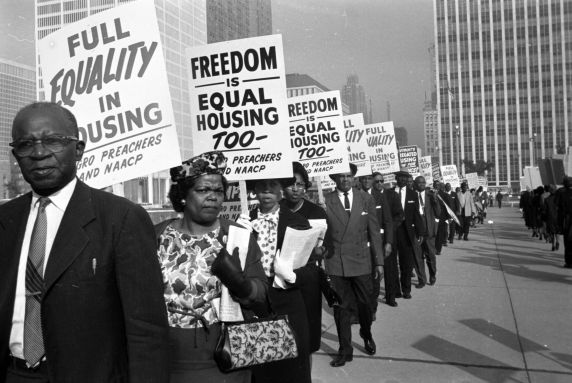

Claim
Racial discrimination is still a prevalent issue in today's housing market
Over the past many decades, people of color especially those who are african have been and still to this day are continually being discriminated against in many ways. One very important way in which people of color are being discriminated in is the housing market. this comes in the form of having different rules and regulation for african americans and also not allowing people of color to rent or buy a house because the people surrounding them. This is the topic that we choose because this issue is a big part of the park by Lorraine Hansberry's, “A Raisin in the Sun”. As a family attempts to buy a house and is later forced out of the home because the neighborhood consisted of white people. This occurred in the 1950’s and to great sadness is still a big issue today. While many people believe that discrimination no longer exists, many people of color can testify of their horrible experiences in which they got discriminated against.